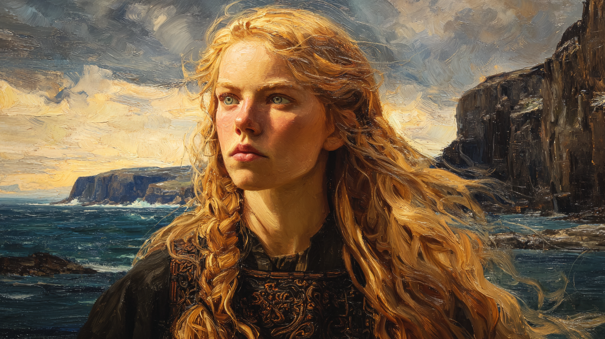
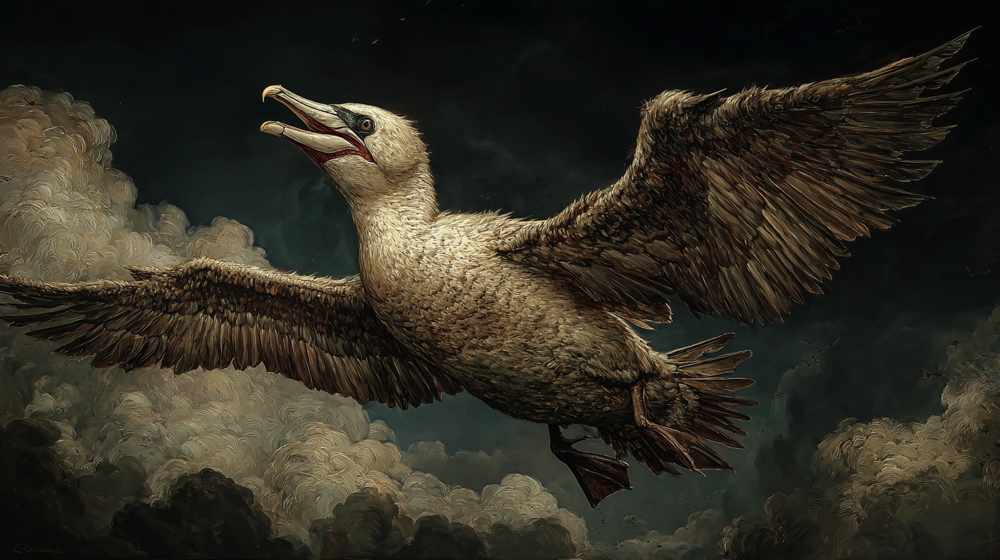
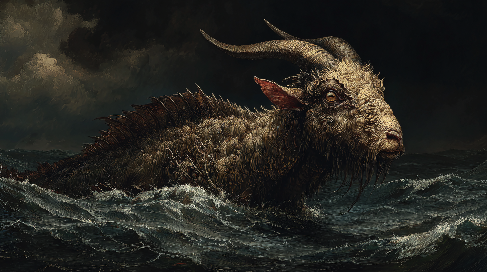

The Gannet — Newly Gauntleted — Seeker of the Ilfetu Mysteries
"When she commits to the dive, there is no hesitation. The calculation happens before; the commitment is total."

Astrid Grásula was born in Norway in 1182, into a period of conflict and displacement she is too young to remember clearly. What she retains: cold, hunger, movement, fear. Her Gift manifested around age four — too young, in too precarious a situation, for her family to manage. She was given over, through channels now lost to memory, to someone who brought her across the water to Scotland. She arrived at Cnoc nam Beathaichean-cridhe — the Hill of the Heartbeasts — speaking only Norwegian, carrying nothing, already learning that home could disappear without warning.
The covenant was the spiritual centre of House Bjornaer in the British Isles, lodged in the Scottish Highlands and oriented toward transformation, mystery, and the deep understanding of what one's heartbeast revealed about one's essential nature. It was a good place for a displaced Norwegian child — outsider status was structural there, and what mattered was the animal beneath the person.
Her parens, Morag Craicfhionn, was a senior Bjornaer with a seal heartbeast and an unsentimental approach to care. Morag taught her what she needed to survive, then prepared her to leave — which Astrid has since recognised as the more demanding version of love. Their fifteen-year apprenticeship divided naturally into two phases: twelve years with Morag building Hermetic fundamentals and heartbeast understanding, then three years of shared responsibility with Uthric Bloðulfrinn, a wolf-hearted maga of Clan Midusulf who taught the practical survival knowledge Morag could not provide — Hermetic law, hostile intentions, what the other Houses actually did versus what they claimed to do.
"Flambeau will test you. Tremere will try to recruit or neutralize you. Bonisagus think they own knowledge. Know what you're walking into." — Uthric Bloðulfrinn, to Astrid, c. 1201
She passed her gauntlet in 1203. Morag's parting was affectionate and brief — Astrid was ready, the covenant had equipped her, and remaining would mean failure to become what she was prepared to be. Astrid left Scotland with her tools, her languages, her Bjornaer silver pendant, and the bone-deep understanding that everything she needed was already inside her.
During her later apprenticeship, Astrid was formally initiated into Clan Ilfetu, the divinatory tradition within House Bjornaer. This brought fifty additional experience points in House-specific knowledge, training in haemagomania (divination through animal blood patterns), deeper understanding of the Great Beasts, and the responsibility to continue and transmit the mysteries. It also gave her the obsession she will spend the next decade pursuing: the deeper initiations are held by elders scattered across Europe, and they must be sought individually.
Solving and Khalida were investigating a tidal regio on the Scottish coast when Astrid, hunting in gannet form, sensed the aura and dove to investigate. She materialised between them and Bras — a magical capricorn she had rescued weeks earlier — and held her position until intentions clarified. The standoff lasted perhaps a minute. Solving explained his vision-driven quest northward; Khalida provided the practical framing. Astrid asked pointed questions about structure, resources, and governance.
She recognised the match immediately. A mobile covenant meant continuous access to the maritime study environments her Study Requirement demanded, flexible movement to pursue Ilfetu elders, and colleagues who needed exactly what she could provide. She joined the provisional arrangement and has not reconsidered.
Astrid is twenty-three years old, less than two years past her gauntlet, and the youngest founding member of Sjórseiðr by a significant margin. She brings deep North Sea environmental knowledge, the gannet heartbeast's unique reconnaissance and strike capabilities, and a direct, unsentimental approach to problems that her two older colleagues both rely on and occasionally find startling. She is at the beginning of a career that will develop for decades. The current moment represents her first real choices made without a parens to correct them.
Intelligence and Perception are exceptional — the gannet scans from height before committing, and Astrid's mind works in the same mode: pattern recognition, rapid assessment, willingness to act on incomplete information once enough data has been gathered. Quickness and Stamina at +2 give her a physical profile that compensates somewhat for the Small Frame penalty; she is fast, she endures, and she does not tire at the rate her ninety-two pounds might suggest. Strength at −3 is stark and accurate: she is not built for force. She has never needed to be.
Four feet eleven inches, ninety-two pounds, Size −1. Wiry and small-framed in the way of someone who has always moved as though slightly faster than the available space required. Blonde hair windswept from sea air, blue eyes sharp with the focused quality of a predator scanning water from height. Norwegian-pale skin shows sun exposure and the occasional scar from her careless approach to casting. Small, calloused hands that move precisely when casting — she has learned to work without grand gestures, economising movement.
She dresses practically: layered woolens and leather, blues and grays that blend with sea and sky. A silver pendant marks Bjornaer heritage. Sometimes feathers worked into braids. Nothing that slows her down.
Impatient −3: Once she has identified her target, waiting is physiologically uncomfortable. She paces, climbs rigging, makes preliminary movements — the gannet circling before the plunge. She has learned to calculate risks before committing; the calculation is methodical; the time between calculation and action is agonising. This is not impulsiveness — she thinks first. She simply cannot tolerate the gap between thinking and doing.
Generous +2: She gives freely — knowledge, resources, protection, equipment — but with an implicit expectation that the gift will be used toward independence. Morag's model. She will teach, equip, and defend; she will not coddle. If you want her help, be prepared to use it to stand on your own. She becomes quietly contemptuous of people who accept help without growing from it.
Curious +1: Genuinely interested in how things work, what patterns mean, why phenomena occur. This fuels her magical study and her pursuit of the mysteries and can, when curiosity overrides caution, lead her somewhere her impatience is happy to follow.

The gannet is a plunge-diving seabird. It hunts by climbing to height, identifying a target, and committing to a near-vertical dive at speeds approaching sixty miles per hour. The impact is violent enough to stun prey on contact. Gannets can injure themselves if the dive is misjudged. They do it anyway.
When Astrid's heartbeast revealed itself, Morag said nothing for a long moment. Then: "Yes. That makes sense."
In gannet form Astrid is Size −3, fast, and maneuverable. She can cast spells at only −5 penalty via Quiet and Subtle Magic — this is not a restriction, it is a tactical capability. She scouts from above in bird form, invisible to most mundane observation, then either transforms back to cast without the altitude disadvantage, or casts directly in gannet form for effects that benefit from surprise and angle. Enemies who have not seen her do this are not prepared for it.
The heartbeast also shapes her human personality in ways she has spent fifteen years analysing and will likely spend the rest of her life refining. The gannet approach to problems: observe from a safe distance, identify the target precisely, commit completely, accept the risk of impact as inherent to decisive action. Focus: once committed, she does not waver. Impatience: the time between identification and dive is meaningless suffering. Directness: no feinting, no misdirection, just the committed strike. Risk acceptance: the dive can hurt her; this is known; it does not change the calculation.
Heartbeast score 5, specialisation Gannet. Transformation is instantaneous and requires no spell. In heartbeast form she is affected by Animal spells rather than Corpus or Mentem — relevant when allies are casting area effects. She carries no possessions in transformation; they do not accompany her. She is recognised as a natural animal by most magic and by most mundane observers, which makes her surveillance capabilities considerably more useful than a magus who transformed into something obviously magical.
Muto 8 and Animal 8 are the twin pillars — House Bjornaer's core arts, reflecting both her heartbeast training and her deep attunement to the living world. Aquam 7 reflects her maritime environment and study conditions. Vim 6 suggests theoretical grounding beyond her years — Uthric's emphasis on understanding magical infrastructure. The rest is thin or absent, and the Terram deficiency is structural. She is a specialist, not a generalist, and she knows it. The spell repertoire has been built to maximise what the Art profile can produce.
A compact, coherent repertoire built almost entirely around her Art profile and her maritime environment. Nothing is here by accident; everything either extends her Animal/Aquam capability, enables tactical use of her heartbeast, or supports the covenant's practical maritime operations. Uthric taught her the two combat spells directly; the rest reflects her own development priorities.

A capricorn — the goat-fish hybrid of magical lore — of modest size and significant intelligence. Cunning rather than brilliant. Understands but does not speak human language. Independent enough to disobey; loyal enough to choose not to.
Astrid encountered Bras in Scottish waters, being pursued by predators. She dove in without hesitation. The rescue bonded them — Bras, intelligent enough to understand what had happened, chose to stay. She accepted responsibility for his wellbeing, understanding immediately that her impulsive dive had created an obligation.
Their relationship is protective but not codependent. She ensures he can survive independently; he comes back anyway. Morag's model — care means preparing others to stand alone — applied to a magical goat-fish. When companions ask how she ended up with a capricorn, she says she dove into cold water without thinking. She means this as explanation, not excuse.
Bras is a flaw in the formal sense: his wellbeing is Astrid's responsibility, and his independence means he is capable of creating complications at inconvenient moments. He is also genuinely useful — intelligent, capable of following complex instructions, attuned to aquatic magical phenomena in ways that complement Khalida's Magic Sensitivity. He is present when he is relevant and absent when he is not. He is, in most respects, a good companion, which she did not know to expect from a reckless act of protection.
Clan Ilfetu is the divinatory tradition within House Bjornaer — practitioners who read meaning in natural patterns, find truth through the observation of blood and bone, and understand that transformation and death reveal what surface appearances conceal. The tradition's deepest initiations are not written. They are held by elders scattered across Europe, transmitted personally, and available only to those who seek them.
What the heartbeast shows you is not what you perform. It is what you are when performance stops. The gannet does not learn to dive. It discovers that it has always been falling. — Ilfetu teaching; attributed to no specific elder
Astrid's Driven flaw is structured around this: the elders must be found, the initiations must be earned, the deeper techniques must be learned. Haemagomania — divination through animal blood patterns — is merely the beginning. What lies past it she does not know. That is why it drives her. Morag recognised the drive and deliberately did not satisfy it; some knowledge must be sought, not given. She equipped Astrid for the journey and pointed toward the general direction of the elders.
The sailing covenant is ideal for this mission precisely because it moves. The elders are in the Scottish Highlands, in Iceland, in Scandinavia, along the Baltic coast. A fixed covenant would require leave-taking for each. Sjórseiðr, by design, passes through them.
Outer Mystery initiated. Haemagomania at basic level. Gothic language sufficient for rituals. Two elders identified by Morag as starting points; neither has been visited. The quest has barely begun. She is aware that she may spend the next thirty years on this, and she is entirely at peace with that timeline — this is the work she is for. What she is less at peace with is the rate at which she is currently allowed to pursue it.
The formative presence of her life, and not easily described. Morag's care was expressed through preparation rather than warmth — she ensured Astrid was competent, then ensured she was ready to leave, and then let her go. Astrid understands this as the most demanding and the most genuine form of love. She can return to the covenant if she truly needs to; she recognises that doing so would mean she had failed to become what Morag made her for. She has not needed to return. She does not expect she will.
She is pragmatic about his vision. He had something he saw in the North Sea that drove him to create this covenant; fine. This produces the mobile platform her Study Requirement and her Ilfetu mission demand. Whether his premonitions are prophetic truth or mystical elaboration is, from her perspective, an interesting question and not particularly urgent. She values his genuine interest in her knowledge — he asks about haemagomania and the Great Beasts not to be polite but because he actually wants to understand — and she finds his philosophical elaborations less irritating than she expected. His Gentle Gift means being around him is neutral where most Hermetic magi are subtly uncomfortable.
She respects Khalida's precision and is appropriately wary of her temper, which she reads the way she reads incoming weather — accurately and with preparation. Their relationship is still developing. Astrid appreciates Khalida's directness and the absence of social performance; Khalida, she suspects, appreciates Astrid's equivalent directness in return. They are two people who have both learned, from different experiences, that circuitousness is a luxury for people who have not yet lost anything.
Her second teacher, three years, the practical half of her education. She respected his competence and his honesty about what the Order was rather than what it claimed to be. They are not close in the way she and Morag are; Uthric trained her the way he trained all his students — by assuming competence and throwing challenges simultaneously. She has not sought contact since her gauntlet. She expects he would be satisfied by what she is doing, which is enough.
She cannot study any magical Art without corresponding natural phenomena present. To study Aquam she needs the ocean or running water; to study Muto she needs living things undergoing transformation; to study Animal she needs creatures nearby. This is the constraint that makes the sailing covenant not merely convenient but structurally necessary. Traditional covenant life — stone halls, enclosed libraries, study in artificial environments — is impossible for her. She studies on deck, in tide pools, on clifftops, at dawn in fishing harbours. She times her seasonal study to the availability of phenomena.
Terram is the Art she cannot easily access at sea and which she is also Deficient in. She has accepted this as a permanent limitation and built around it. At sea, nearly every other Art is accessible.
Two extra botch dice when casting. One fewer at sea. She casts with commitment; she accepts that commitment carries risk; she has internalised both the costs and the occasional catastrophic consequences. Morag taught her to calculate before the dive. She calculates. The calculation does not always prevent the botch. When it goes wrong, she absorbs the lesson and tries again — dwelling is not in her nature.
Reconnaissance in gannet form. Animal Ken providing intelligence from sea creatures. Ways of the Sea providing navigation and environmental reading no other member of the founding trio can match. Decisive strike capability when required — particularly effective over water where Pull of the Watery Grave and heartbeast diving combine. Ilfetu visions providing occasional advance notice of significant events. She is not the fleet's primary weather-worker (Khalida is developing toward that) or its philosopher (Solving) — she is its eyes, its ears at water level, and its committed strike when hesitation would cost more than the botch risk.
Astrid Grásula is the youngest founding member of Sjórseiðr by nearly a decade, newly gauntleted, and operating without the safety net of a parens for the first time. What she brings is not the accumulated depth of Solving's philosophical practice or Khalida's laboratory mastery — she is twenty-three, and those take time. What she brings is a specific, fully developed capability set that neither of her colleagues can replicate: the gannet heartbeast and everything it implies, Ways of the Sea at full operational depth, and Animal Ken that makes the North Sea's non-human population into a distributed intelligence network.
She is also the member of the three most likely to act before the other two have finished deliberating. Whether this is a flaw depends entirely on whether the action was the right one. Her track record, so far, is reasonable. Bras is still alive. Sjórseiðr exists.
The Ilfetu mysteries. Everything else — the covenant, the maritime work, the relationships she has formed — she values and will protect, but the mysteries are the undertow beneath all of it. Morag pointed her at something and let her go, and she is going. She would like to understand her visions, but this is secondary. She would like to understand what Bras actually makes of his situation, but this is peripheral. She wants the next initiation, the next elder, the next piece of what her heartbeast is trying to tell her about what she is.
The gannet does not hesitate at the apex of the dive. It has already made every decision it needs to make. What comes after is just physics. — Astrid Grásula; attributed by Khalida bint Tariq, who witnessed the dive on Bras's behalf and noted the accuracy of the metaphor
This dossier is maintained in the personal records of the Sjórseiðr covenant. It should be updated following any Ilfetu initiation, significant vision event, or heartbeast experience of note. Solving Epicurusson found the assessment "admirably concise." Khalida bint Tariq read it, noted that the attribution in the epigraph is accurate, and moved on. Astrid Grásula declined to review it on the grounds that reading assessments of oneself while still in motion is counterproductive.